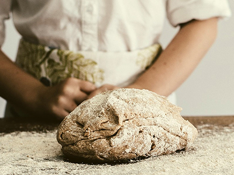

三鷹の小さなパン屋さん

三鷹の小さなパン屋さん


体に良い原材料は生産者の方たちの努力の軌跡が詰まっています。西久保ベーカリーでは体に良いパンを焼きあげるため、以下のこだわりの素材を使用しています。そしてこれらの素材のお互いの調和から生まれる美味しさもお楽しみください。
ほとんどのパン屋さんは北海道産の小麦粉を使用していますが、西久保ベーカリーのパンはすべて九州産のミナミノカオリ100%の九麦南香を使用しています。豊かな風味と深い味わいが特徴の小麦粉です。
西久保ベーカリーのパンはインスタントドライイーストのような人工的な食品添加物等を使わず、干しブドウから作った自家製酵母を使用しています。イーストフードと比べると手間と時間はかかりますが、ヘルシーでしっとりとしたもちもちの食感が楽しめます。

砂糖はミネラルを含んだ本和香糖と黒砂糖、塩は沖縄のシママース、バターはよつ葉バター、ミルクはコクのあるよつ葉バターミルク、ショートニングはオーガニックのトランス脂肪酸フリーのものを使用、また健康が特に気になる方のために*グレープシードオイルを選びました。
*動脈硬化や血栓を防ぎ、血圧を下げるほか、LDLコレステロールを減らす効果が確認されているパイ生地は市販のものを使用するパン屋さんも多いのですが、西久保ベーカリーではすべて手作りしています。何回も生地を休ませながら作業する必要があるので完成まで3日かかります。小麦粉とバターの合わせ方が西久保ベーカリー独自の食感を生み出します。
